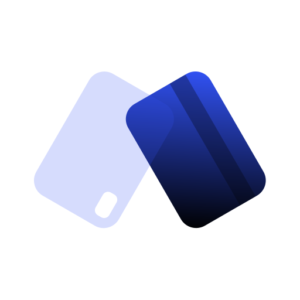
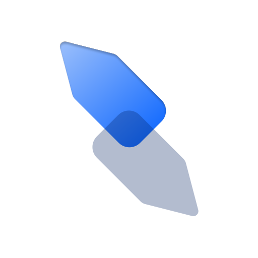

Technology that doesn't rush.
We create products that leave space.
An independent app studio crafting quiet, minimalist tools for iOS.
Software that respects your attention, removes clutter, and leaves space for what truly matters.
We create products because we needed them ourselves.
Life doesn't need to be optimized. It's important to feel it.
Our apps don't rush, demand, or evaluate — they're just there when needed.
Simple tools for attention, clarity and space.
We build only when something is truly missing — never sooner.
MonoTesting


Invercaro · Click the screen to enter